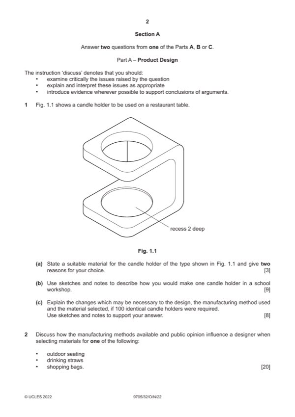

Question 1

Original paper page 2
Part 1(a) — solution
- abs/polypropylene/acrylic/HIPS/GRP
- beech, maple, ash or attractive grain hardwood
- aluminium alloy, stainless steel
- can be manufactured to required shape
- will look attractive on table
Mark points
- abs/polypropylene/acrylic/HIPS/GRP
- beech, maple, ash or attractive grain hardwood
- aluminium alloy, stainless steel
- can be manufactured to required shape
- will look attractive on table
Part 1(b) — solution
- fully detailed all/most stages 4–7
- some detail, 0–3 Laminated
- quality of sketches up to 2 prepare former
Mark points
- fully detailed all/most stages 4–7
- some detail, 0–3 Laminated
- quality of sketches up to 2 prepare former
Part 1(c) — solution
- change in process;
- change in materials;
- use of templates, jigs, formers, moulds;
- simplification of design
- logical, structured 4–6
- limited detail, 0–3
- quality of sketches up to 2
Mark points
- change in process;
- change in materials;
- use of templates, jigs, formers, moulds;
- simplification of design
- logical, structured 4–6
- limited detail, 0–3
- quality of sketches up to 2